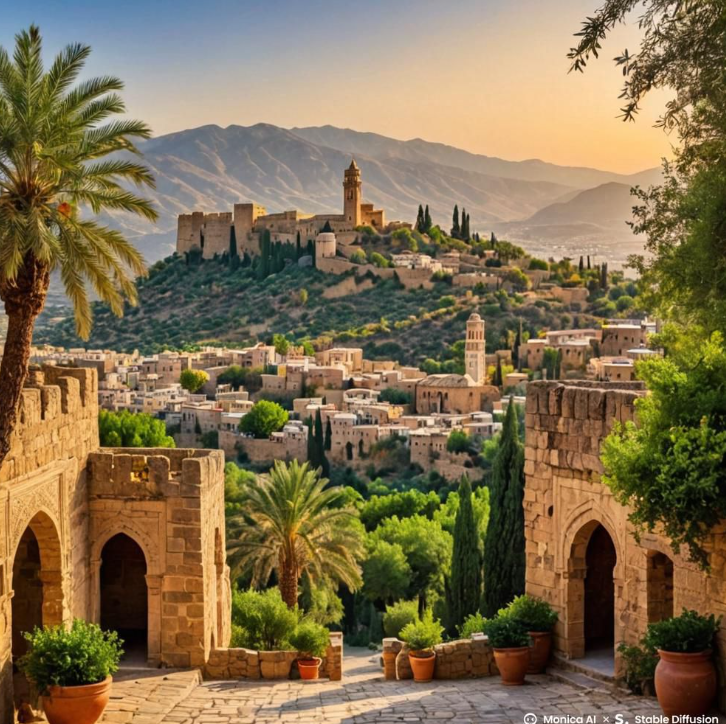

Origen
Estamos en la Edad Media, esa época de castillos, juglares y
banquetes que duraban horas. Esta receta tiene vibes de la cocina andalusí, una fusión brutal
entre la tradición árabe y la europea, típica en la Península Ibérica.
Los cocineros de la corte la petaban con estas mezclas exóticas, usando especias como si no
hubiera un mañana.